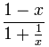
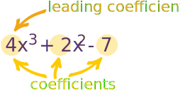
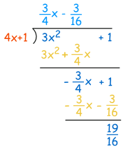

Rational Expressions
An expression that is the ratio of two polynomials:

It is just like a fraction, but with polynomials.
Other Examples:
| x3 + 2x − 16x2 | 2x + 9x4 − x2 |
Also
| 12 − x2 | The top polynomial is "1" which is fine. |
| 2x2 + 3 | Yes it is! As it could also be written: 2x2 + 31 |
But Not
| 2 − √(x)4 − x | the top is not a polynomial (a square root of a variable is not allowed) | |
|  | 1/x is not allowed in a polynomial |
In General
A rational function is the ratio of two polynomials P(x) and Q(x) like this
f(x) = P(x)Q(x)
Except that Q(x) cannot be zero (and anywhere that Q(x)=0 is undefined)
Finding Roots of Rational Expressions
|
A "root" (or "zero") is where the expression is equal to zero:
|
 |
To find the roots of a Rational Expression we only need to find the the roots of the top polynomial, so long as the Rational Expression is in "Lowest Terms".
So what does "Lowest Terms" mean?
Lowest Terms
Well, a fraction is in Lowest Terms when the top and bottom have no common factors.
Example: Fractions
2
6
is not in lowest terms,
as 2 and 6 have the common factor "2"
But:
1
3
is in lowest terms,
as 1 and 3 have no common factors
Likewise a Rational Expression is in Lowest Terms when the top and bottom have no common factors.
Example: Rational Expressions
x3+3x22x is not in lowest terms,
as x3+3x2 and 2x
have the common factor "x"
But
x2+3x2 is in lowest terms,
as x2+3x and 2 have no common factors
So, to find the roots of a rational expression:
- Reduce the rational expression to Lowest Terms,
- Then find the roots of the top polynomial
How do we find roots? Read Solving Polynomials to learn how.
Proper vs Improper
| Fractions can be proper or improper: |
 |
| (There is nothing wrong with "Improper", it is just a different type) |
And likewise:
A Rational Expression can also be proper or improper!
But what makes a polynomial larger or smaller?
The Degree !
For a polynomial with one variable, the Degree is the largest exponent of that variable.
Examples of Degree:
| 4x | The Degree is 1 (a variable without an exponent
actually has an exponent of 1) |
|
| 4x3 − x + 3 | The Degree is 3 (largest exponent of x) |
So this is how to know if a rational expression is proper or improper:
Proper: the degree of the top is less than the degree of the bottom.
| Proper: | 1x + 1 | deg(top) < deg(bottom) |
Another Example: xx3 − 1
Improper: the degree of the top is greater than, or equal to, the degree of the bottom.
| Improper: | x2 − 1x + 1 | deg(top) ≥ deg(bottom) |
Another Example: 4x3 − 35x3 + 1
If the polynomial is improper, we can simplify it with Polynomial Long Division
Asymptotes
Rational expressions can have asymptotes (a line that a curve approaches as it heads towards infinity):
Example: (x2-3x)/(2x-2)
|
The graph of (x2-3x)/(2x-2) has:
|
 |
A rational expression can have:
- any number of vertical asymptotes,
- only zero or one horizontal asymptote,
- only zero or one oblique (slanted) asymptote
Finding Horizontal or Oblique Asymptotes
It is fairly easy to find them ...
... but it depends on the degree of the top vs bottom polynomial.
The one with the larger degree will grow fastest.
Just like "Proper" and "Improper", but in fact there are four possible cases, shown below.

(I show a test value of x=1000 for each case, just to show what happens)
Let's look at each of those examples in turn:
Degree of Top Less Than Bottom
The bottom polynomial will dominate, and there is a Horizontal Asymptote at zero.
Example: f(x) = (3x+1)/(4x2+1)
When x is 1000:
f(1000) = 3001/4000001 = 0.00075...
And as x gets larger, f(x) gets closer to 0
Degree of Top is Equal To Bottom
Neither dominates ... the asymptote is set by the leading terms of each polynomial.
Example: f(x) = (3x+1)/(4x+1)
When x is 1000:
f(1000) = 3001/4001 = 0.750...
And as x gets larger, f(x) gets closer to 3/4
Why 3/4? Because "3" and "4" are the "leading coefficients" of each polynomial

The terms are in order from highest to lowest exponent
(Technically the 7 is a constant, but here it is easier to think of them all as coefficients.)
The method is easy:
Divide the leading coefficient of the top polynomial by the leading coefficient of the bottom polynomial.
Here is another example:
Example: f(x) = (8x3 + 2x2 - 5x + 1)/(2x3 + 15x + 2)
The degrees are equal (both have a degree of 3)
Just look at the leading coefficients of each polynomial:
- Top is 8 (from 8x3)
- Bottom is 2 (from 2x3)
So there is a Horizontal Asymptote at 8/2 = 4
Degree of Top is 1 Greater Than Bottom
This is a special case: there is an oblique asymptote, and we need to find the equation of the line.
To work it out use polynomial long division: divide the top by the bottom to find the quotient (ignore the remainder).
Example: f(x) = (3x2+1)/(4x+1)
The degree of the top is 2, and the degree of the bottom is 1, so there will ne an oblique asymptote
We need to divide 3x2+1 by 4x+1 using polynomial long division:

The answer is (3/4)x-(3/16) (ignoring the remainder):
Asymptote "equation of line" is: (3/4)x-(3/16)
Degree of Top is More Than 1 Greater Than Bottom
When the top polynomial is more than 1 degree higher than the bottom polynomial, there is no horizontal or oblique asymptote.
Example: f(x) = (3x3+1)/(4x+1)
The degree of the top is 3, and the degree of the bottom is 1.
The top is more than 1 degree higher than the bottom so there is no horizontal or oblique asymptote.
Finding Vertical Asymptotes
There is another type of asymptote, which is caused by the bottom polynomial only.
But First: make sure the rational expression is in lowest terms!

Whenever the bottom polynomial is equal to zero (any of its roots) we get a vertical asymptote.
Read Solving polynomials to learn how to find the roots
From our example above:
Example: (x2-3x)/(2x-2)
|
The bottom polynomial is 2x-2, which factors into: 2(x-1) And the factor (x-1) means there is a vertical asymptote at x=1 (because 1-1=0) |
|
A Full Example
Example: Sketch (x−1)/(x2−9)
First of all, we can factor the bottom polynomial (it is the difference of two squares):
x−1(x+3)(x−3)
Now we can see:
The roots of the top polynomial are: +1 (this is where it crosses the x-axis)
The roots of the bottom polynomial are: −3 and +3 (these are Vertical Asymptotes)
It crosses the y-axis when x=0, so let us set x to 0:
Crosses y-axis at: 0−1(0+3)(0−3) = −1−9 = 19
We also know that the degree of the top is less than the degree of the bottom, so there is a Horizontal Asymptote at 0
So we can sketch all of that information:

And now we can sketch in the curve:

(Compare that to the plot of (x-1)/(x2-9))